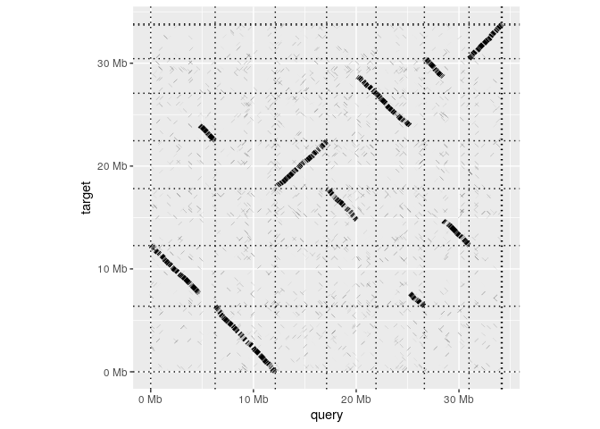
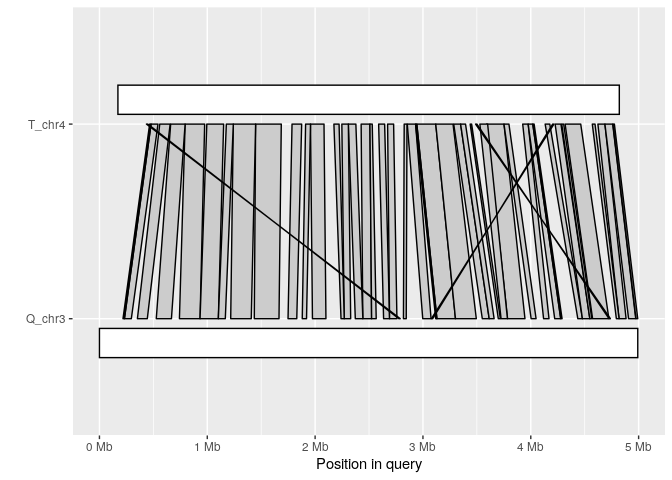
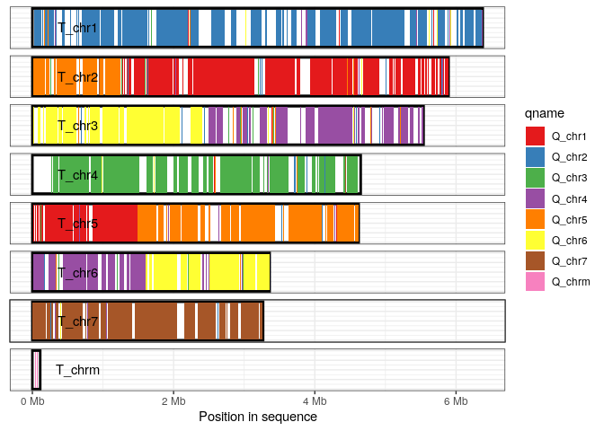

Read, manipulate and visualize ‘Pairwise mApping Format’ data in R
Under construction
This package is in the process of being turned from research code into a nice usable package. The package is now feature-complete, and all functions are documented. However, there may still be bugs in the code that haven’t been exposed by our tests and it is possible we will introduce breaking-changes in the future.
Nevertheless, we’d appreciate feedback from anyone that might the package. Having installed the package, making a whole-genome dotplot is as simple as reading in an alignment and calling dotplot:.
library(pafr, quietly=TRUE)
test_alignment <- system.file("extdata", "fungi.paf", package="pafr")
ali <- read_paf(test_alignment)
dotplot(ali, label_seqs=TRUE)
Installation
The package is not yet available on CRAN, but we will keep the master branch of this repository stable. You can install using devtools
#install.packages(devtools)
devtools::install_github("dwinter/pafr")Plots
In addition to the dotplot demonstrated above, the package impliments two classes of genomic visualization
Synteny plot
The synteny plot displays alignments between one query and one target sequence in a given paf file. Using the alignment above, we first filter short alignments then plot regions that align between query chromosome “Q_chr4” and target “T_chr4”:
long_ali <- subset(ali, alen > 1e4)
plot_synteny(long_ali, q_chrom="Q_chr3", t_chrom="T_chr4", centre=TRUE)
Coverage plot
The coverage plot displays all sequences in either the query or target genome, shading those regions of each sequence that are covered by at least one alignment. This can be a useful in identifying how alternative genome assemblies differ from each other, or visualizing differences between related genomes.
In this example we visualize the query sequences in our alignment, and shade each alignment according to target-sequence involved in the alignment.
plot_coverage(long_ali, fill='qname') +
scale_fill_brewer(palette="Set1") ## Bugs/Issues
Please use the issue tracker on this repo to let us know about any bugs or issues that arise as you use this package.